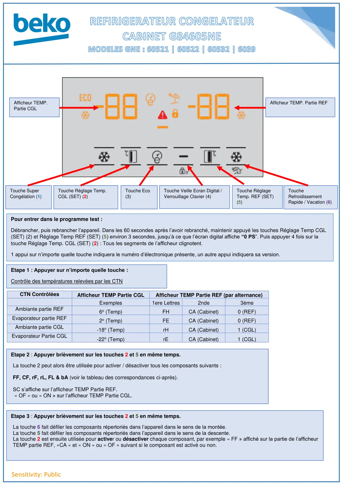
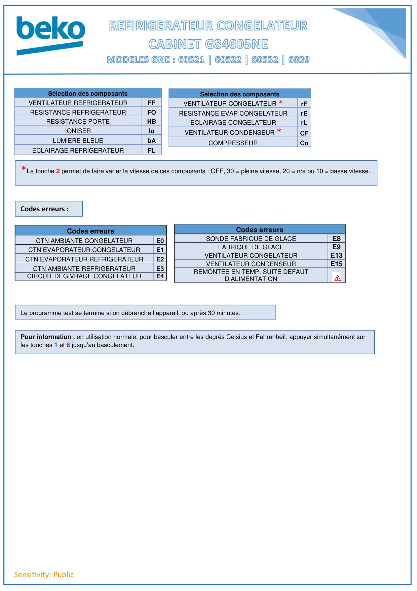

Sensitivity: PublicCTN ContrôléesAfficheur TEMP Partie CGLAfficheur TEMP Partie REF (par alternance)Exemples1ere Lettres2nde3èmeAmbiante partie REF6o (Temp)FHCA (Cabinet)0 (REF)Evaporateur partie REF2o (Temp)FECA (Cabinet)0 (REF)Ambiante partie CGL-18o (Temp)rHCA (Cabinet)1 (CGL)Evaporateur Partie CGL-22o (Temp)rECA (Cabinet)1 (CGL)Touche SuperCongélation (1)Touche Réglage Temp.CGL (SET) (2)Touche Eco(3)Touche Veille Ecran Digital /Verrouillage Clavier (4)Touche RéglageTemp. REF (SET)(5)ToucheRefroidissementRapide / Vacation (6)Pour entrer dans le programme test :Débrancher, puis rebrancher l’appareil. Dans les 60 secondes après l’avoir rebranché, maintenir appuyé les touches Réglage Temp CGL(SET) (2) et Réglage Temp REF (SET) (5) environ 3 secondes, jusqu’à ce que l’écran digital affiche “0 PS”. Puis appuyer 4 fois sur latouche Réglage Temp. CGL (SET) (2) : Tous les segments de l’afficheur clignotent.1 appui sur n’importe quelle touche indiquera le numéro d’électronique présente, un autre appui indiquera sa version.Etape 1 : Appuyer sur n’importe quelle touche :Contrôle des températures relevées par les CTNEtape 2 : Appuyer brièvement sur les touches 2 et 5 en même temps.La touche 2 peut alors être utilisée pour activer / désactiver tous les composants suivants :FF, CF, rF, rL, FL & bA (voir le tableau des correspondances ci-après).SC s’affiche sur l’afficheur TEMP Partie REF.« OF » ou « ON » sur l’afficheur TEMP Partie CGL.Etape 3 : Appuyer brièvement sur les touches 2 et 5 en même temps.La touche 6 fait défiler les composants répertoriés dans l’appareil dans le sens de la montée.La touche 5 fait défiler les composants répertoriés dans l’appareil dans le sens de la descente.La touche 2 est ensuite utilisée pour activer ou désactiver chaque composant, par exemple « FF » affiché sur la partie de l’afficheurTEMP partie REF, «CA » et « ON » ou « OF » suivant si le composant est activé ou non.Afficheur TEMP. Partie REFAfficheur TEMP.Partie CGL
1 / 2
Sensitivity: PublicSélection des composantsVENTILATEUR REFRIGERATEURFFRESISTANCE REFRIGERATEURFORESISTANCE PORTEHBIONISERIoLUMIERE BLEUEbAECLAIRAGE REFRIGERATEURFLSélection des composantsVENTILATEUR CONGELATEUR *rFRESISTANCE EVAP CONGELATEURrEECLAIRAGE CONGELATEURrLVENTILATEUR CONDENSEUR *CFCOMPRESSEURCoCodes erreursCTN AMBIANTE CONGELATEURE0CTN EVAPORATEUR CONGELATEURE1CTN EVAPORATEUR REFRIGERATEURE2CTN AMBIANTE REFRIGERATEURE3CIRCUIT DEGIVRAGE CONGELATEURE4Codes erreursSONDE FABRIQUE DE GLACEE8FABRIQUE DE GLACEE9VENTILATEUR CONGELATEURE13VENTILATEUR CONDENSEURE15REMONTEE EN TEMP. SUITE DEFAUTD’ALIMENTATION⚠*La touche 2 permet de faire varier la vitesse de ces composants : OFF, 30 = pleine vitesse, 20 = n/a ou 10 = basse vitesse.Codes erreurs :Le programme test se termine si on débranche l’appareil, ou après 30 minutes.Pour information : en utilisation normale, pour basculer entre les degrés Celsius et Fahrenheit, appuyer simultanément surles touches 1 et 6 jusqu’au basculement.
2 / 2